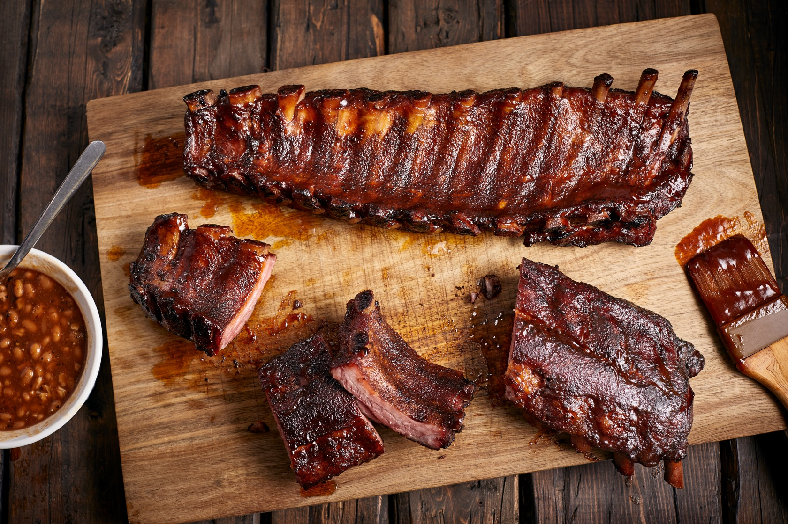

Babyback Ribs

Description
Babyback Ribs glazed in barbecue sauce, brown sugar
and charred on the grill. This mouth watering recipe will have
you labeled as the fan favorite at your next family outing. A little
something for everyone with the sweet and tangy aftertaste having you
chomp down with reckless abandon and wondering if you already went back
for seconds or not. Truly the perfect dish to match your "Kiss the Chef"
apron.
Ingredients
- One rack of ribs or your choice
- Light brown sugar
- Sweet Baby Rays BBQ sauce
- Whole lemon
Steps
- Set rack on grill, letting it cook for 15 minutes before
flipping and cooking for another 15 minutes. Slice lemon in half.
- While ribs are cooking, use three seperate bowls to setup sauces for glazing
- Fill one bowl with just Sweet Baby Rays BBQ sauce, another with 2 cups light brown sugar
and half of the lemon before mixing and the last bowl with 2 cups brown sugar and 3 cups BBQ sauce
- When ribs are flipped for the first time, glaze one side with brown sugar ane lemon mix. Repeat when
time comes to flip them again.
- Repeat previous step with BBQ sauce and BBQ and Brown Sugar mixture in the smae intervals
- Let ribs sit for an additional 45 minutes or until thoroughly cooked
- Once cooked, remove from grill and squeeze the other lemon half over both sides of the ribs
- Enjoy your meal.